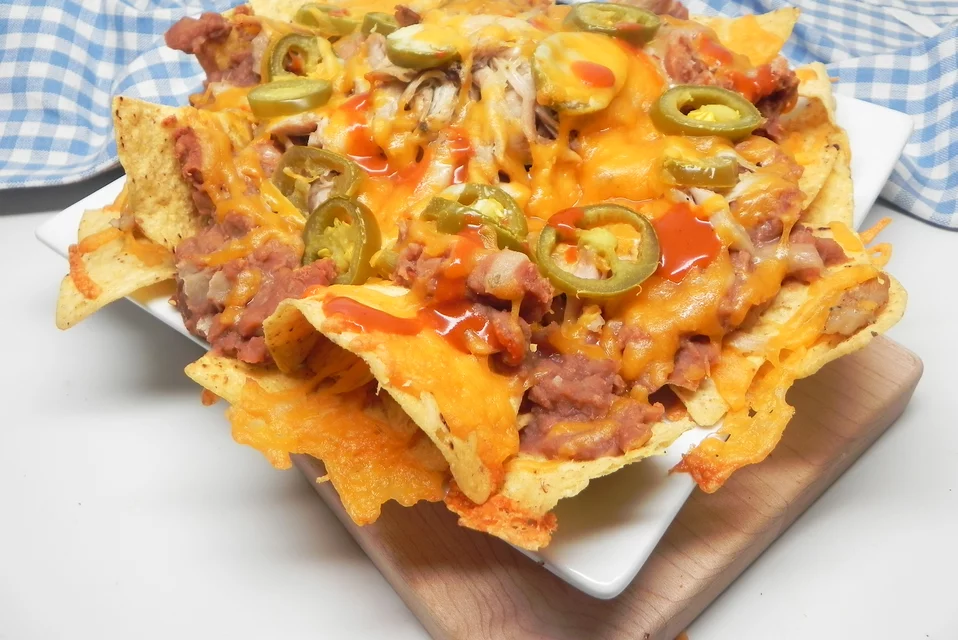

Nachos

A basic recipe for nachos with refried beans that can be modified to anything you have on hand, including leftovers!
Ingredients
- 1 (14.5 ounce) package tortilla chips
- 1 (16 ounce) can refried beans
- 2 cooked skinless, boneless chicken breast halves, cut into bite-sized pieces
- 1 cup canned jalapeno pepper slices
- 12 ounces shredded Cheddar cheese
Instructions
- Preheat the oven to 350 degrees F (175 degrees C). Line a large rimmed baking sheet with parchment paper.
- Pour tortilla chips onto the prepared baking sheet. Spread refried beans over the chips. Layer on chicken and jalapenos. Top with Cheddar cheese.
- Bake in the preheated oven until cheese is melted and bubbly, about 6 minutes.